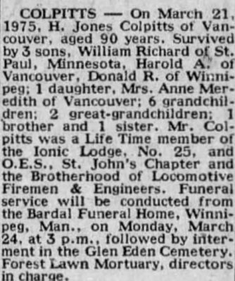
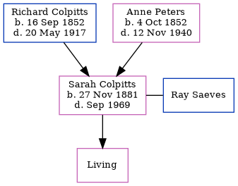

Henry Jones Colpitts 1884 - 1975
[ Home ] | [ Calendar ] | [ Surnames Index ] | [ Census Index ] | [ Family History ]The 5th of 8 children of Richard Colpitts and Anne Peters, Henry Colpitts, the third cousin twice-removed on the father's side of Nigel Horne, was born in Pleasant Vale, Albert, New Brunswick, Canada on Sep 19, 18841,2,3,4,5, was baptized in Hillsborough, Albert, New Brunswick, Canada c. 1888 and married Mary Buchanan (with whom he had 4 children: William Hector, Harold Alistair, Donald Ralph and Priscilla Anne, along with 3 surviving children) in Winnipeg, Manitoba, Canada on Apr 17, 19127.
During his life, he was living in Elgin, Albert, New Brunswick, Canada in 18911 and in 19012 (the same place as his father had been living in 1891); and in Toronto, Manitoba c. 19163.
He died on Mar 21, 1975 in Vancouver, British Columbia, Canada4,6 and was buried at Glen Eden Cemetery, 4477 Main St, West Saint Paul, Manitoba on Mar 24, 1975 following his funeral at Bardal Funeral Home, Winnipeg, Manitoba, Canada.
Parents
- Richard Byron was born on Sep 16, 1852
- Anne Atkinson was born on Oct 4, 1852
Children
- Donald Ralph was born in 1919
Citations
- 1891 Census of Canada Ancestry.com Operations Inc (Marital Status: Single; Relation to Head of House: Son)
- 1901 Census of Canada Ancestry.com Operations Inc (Marital Status: Single; Relation to Head of House: Son)
- 1916 Canada Census of Manitoba, Saskatchewan, and Alberta Ancestry.com Operations Inc (Marital Status: Married; Relation to Head of House: Self)
- British Columbia, Canada, Death Index, 1872-1990 Ancestry.com Operations Inc
- Canada Census 1891 - Findmypast (was age 7 and the son of the head of the household)
- British Columbia, Canada, Death Index, 1872–1992 - Findmypast
- Web: Manitoba, Marriage Index, 1879-1931 Ancestry.com Operations, Inc.
Media
Henry Jones Colpitts - Obituary

Canada Census 1901 - CAN/CENSUS/1901/00422880
Canada Census 1891 - CAN/CENSUS/1891/00250614
British Columbia, Canada, Death Index, 1872–1992 - US/MCV/126823/0153753370244018
Family Tree
Generated by ged2site. Last updated on Jun 11, 2024